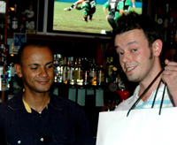
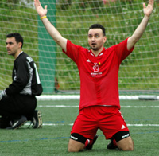

TML Community bids farewell to a very successful 3rd season
|  |
|
Roddy receives his 'Scribe' award from Jon.
|
Legends, Saturday 7th July. The ever growing Tokyo Metropolis League community, comprised of players from both divisions, referees, sponsors and supports, descended on Legends in Roppongi for the end of season party/award ceremony, On Saturday July 4th.
The evening kicked off with a sumptuous BBQ that many chose to wash down with one or two Vodka-Redbulls, followed by a Jägermeister or four, served by rubber-clad gals who claimed to be the official 'Jägermeister Girls', but those who had actually been to a Jägermeister sponsored event in the past, had their suspicions - perhaps it was the foreheads full of acne that initially roused suspicion. more...
JD.
The Great Escape
Oi Futo1, Saturday 17th June. YCAC vs WS Geckoes wrapped up TML 3 at Oi Futo on Saturday morning; YCAC running out comfortable winners. Though a poor run for YCAC in April had spoiled the organizers hopes of a last day title decider with the Hibs, there was still plenty at stake almost up until the last kick of the season.
The Geckoes, outgunned in the 1H and turning round 0-4 down, played the last 40 minutes of their season knowing that a 6 goal losing margin would see them and not KGFC relegated to Div2. more...
ST.
Unbeaten Jets Win League In Style
Todoroki, Sunday 11th June. The Saitama Jets wrapped up the Division Two title with a comfortable 4-1 win over a useful Shane side. The goals came from Keating, and, predictably, Loren, Gildart and Garner. There were other chances to add to the lead, but in rotten conditions, the Jets hot-shots were unable to take advantage.
Both teams entered the game with something to prove. Shane had a reputation for a mean defence, with only 8 goals conceded in 12 games. They had also held the Celts and Stoneds to draws in recent weeks, confirming that they are one of the strongest sides in the division. The Jets were champions-elect, and had the best goal-scoring record in Division Two with 41 goals from 12 games. In a battle between defence and attack, it was the penetrating thrust of the Jets which won out. more...
GG.
It's All 3's For Swiss.
|  |
|
The gesture says it all after Angelo Foscoli scores Swiss' 2nd goal!
|
Saitama Stadium, Saturday 10th June. They may have only taken third place in the league this season, but a 3-0 win sent Swiss kickers to a third successive Footy Japan Cup final Victory over France FC.
After a stalemate in the first half, last years TML Golden boot winner, Karl Hahne, scored one and set up another as the Swiss left no doubt as to who would take the Cup home again. This years TML top scorer, France's Etsushi Yoshikoshi, was kept quiet for most of the match under the watchful eye of Cap'n Kirk Neureiter.
The French skipper admitted they were out played by a Swiss side fielding 9 players different from their encounter 2 weeks ago. Ex manager/skipper Jos Van Der Valk, even made the tripo all the way from Amsterdam to be there to cheer them on! more ...
TML.
|